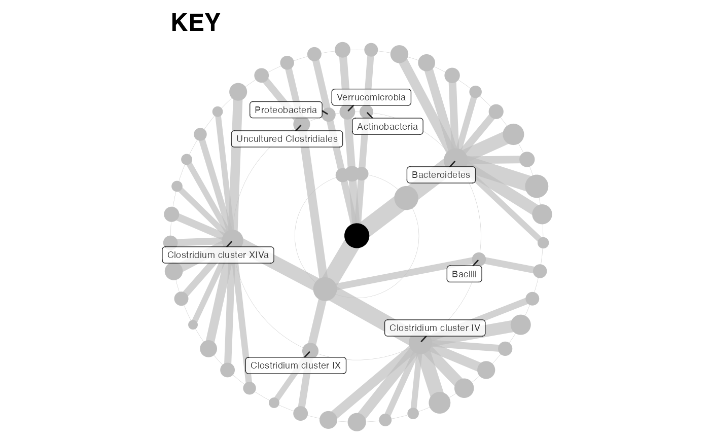
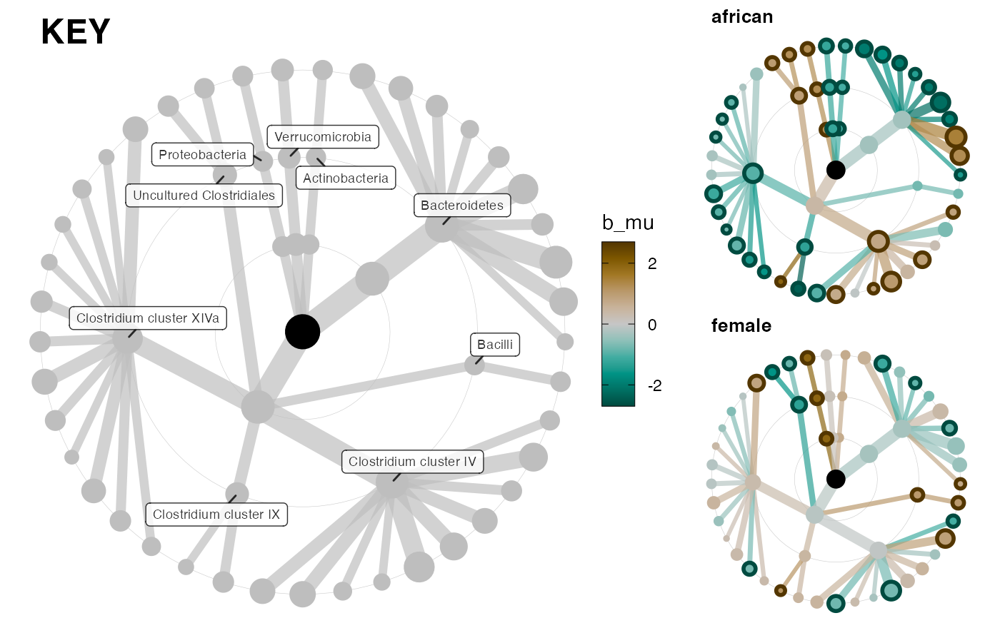
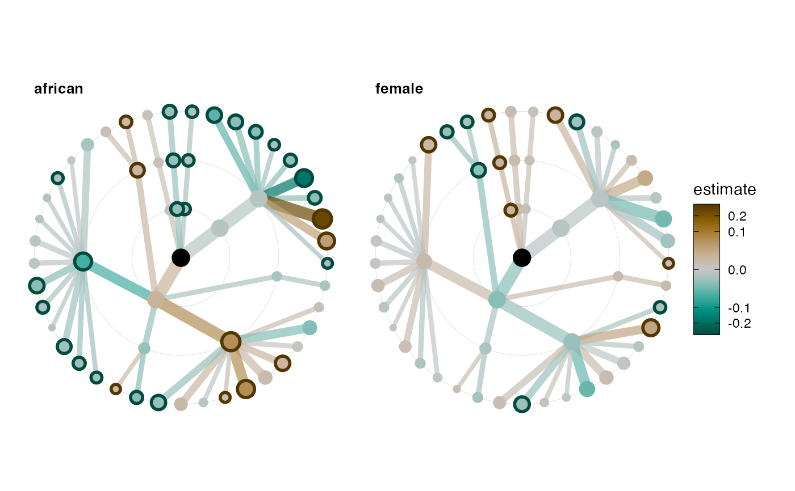

Uses a phyloseq object to make a tree graph structure from the taxonomic table.
Then adds statistical results, i.e. the output out taxatree_models (from the same phyloseq).
Arguments
colour_statand (optionally)sig_varmust be variables that can be extracted from the model objects inmodels_list.taxatree_plotkeyplots same layout astaxatree_plots, but in a fixed colour
taxatree_plots( ps, models_list, var_selection = NULL, var_renamer = function(x) identity(x), size_stat = "taxon_mean", colour_stat = NULL, max_node_size = 5, max_edge_width = round(max_node_size * 3/4), sig_var = TRUE, sig_threshold = 0.05, sig_stroke_width = 1.5, colour_palette = "Green-Brown", reverse_colours = FALSE, luminance_l2 = 80, colour_lims = NULL, layout = "tree", drop_tax_levels = TRUE, add_circles = TRUE ) taxatree_plotkey( ps, size_stat = "taxon_mean", colour = "grey", max_node_size = 8, max_edge_width = round(max_node_size * 3/4), layout = "tree", label = utils::tail(phyloseq::rank_names(ps), 2)[1], label_style = list(size = 2.5, alpha = 0.8), taxon_renamer = function(x) identity(x), tax_levels = phyloseq::rank_names(ps), add_circles = TRUE )
Arguments
| ps | phyloseq object |
|---|---|
| models_list | list of lists of models, as output by taxatree_models |
| var_selection | optionally only plot trees for this selection of predictor variables |
| var_renamer | function to rename variables (called AFTER any var selection) |
| size_stat | name of variable to scale size of nodes and edges (natural log scale) |
| colour_stat | name of variable to scale colour/fill of nodes and edges (natural log scale) |
| max_node_size | set this to avoid overlapping nodes at different scales |
| max_edge_width | max edge width (optionally relative to max node size) |
| sig_var | optional name of variable used to define statistical significance (outlines significant nodes) - NULL for no outlines |
| sig_threshold | value of sig_var below which statistical significance outlines are drawn |
| sig_stroke_width | fixed width of statistical significance node outlines |
| colour_palette | any diverging hcl colour palette name see: |
| reverse_colours | reverse direction of colour scale? |
| luminance_l2 | luminance of colourscale midpoint (higher is lighter) |
| colour_lims | limits of colour and fill scale, used to harmonise across several plots (values squished to fit this range!) |
| layout | name of ggraph layout or manually specified layout with data.frame of x and y coordinates |
| drop_tax_levels | remove taxonomic levels from tree plots if stats are not available for them from models list |
| add_circles | draw grey background circles, 1 circle per taxonomic rank plotted |
| colour | fixed colour of points and edges |
| label | names of taxonomic ranks at which to label taxa |
| label_style | list to style labels: passed as arguments to geom_label_repel() |
| taxon_renamer | function to rename taxa when labelling (e.g. removing g__ etc.) |
| tax_levels | names of tax ranks to include in plot |
Value
ggraph ggplot (or list of)
Details
Uses ggraph (see help for main underlying graphing function with ?ggraph::ggraph)
Examples
# corncob stats testing library(dplyr) library(microbiome) library(corncob) library(patchwork) # for arranging grid of plots data(dietswap) ps <- dietswap # create some binary variables for easy visualisation ps <- ps %>% ps_mutate( female = if_else(sex == "female", 1, 0, NaN), african = if_else(nationality == "AFR", 1, 0, NaN), overweight = if_else(bmi_group == "overweight", 1, 0, NaN), obese = if_else(bmi_group == "obese", 1, 0, NaN) ) # This example dataset has some taxa with the same name for phylum and family... # We can fix problems like this with the tax_prepend_ranks function ps <- tax_prepend_ranks(ps) # filter out rare taxa ps <- ps %>% tax_filter(min_prevalence = 0.1, min_total_abundance = 10000)#># specify variables used for modelling models <- taxatree_models(ps, tax_levels = 1:3, formula = ~ female + african, verbose = FALSE)#>#>#>plots <- taxatree_plots(ps, models_list = models, max_node_size = 4) patchwork::wrap_plots(plots, guides = "collect")# cowplot is easiest for arranging trees and key and colourbar legend colourbar <- cowplot::get_legend(plots[[1]]) keyrow <- cowplot::plot_grid(key, colourbar, rel_widths = c(9, 1)) plot_col <- cowplot::plot_grid( plots[[1]] + theme(legend.position = "none"), plots[[2]] + theme(legend.position = "none"), ncol = 1 ) cowplot::plot_grid(keyrow, plot_col, nrow = 1, rel_widths = c(2, 1))models_lm <- ps %>% microbiome::transform("compositional") %>% taxatree_models(type = "lm", tax_levels = 1:3, formula = ~ female + african, verbose = FALSE)#>#>#>plots_lm <- taxatree_plots(ps, models_lm, max_node_size = 5) patchwork::wrap_plots(plots_lm, nrow = 1, guides = "collect")key